GUÍA DE USO ILUSTRADA
Disponibilidad gestionada
Controle desde un único panel Moodle el acceso a secciones, actividades y recursos. Todas las imágenes proceden del plugin real en un curso ficticio de demostración.
1. Activar la gestión en un curso
Un usuario con availability/managed:configure abre Más → Configuración de Disponibilidad gestionada. En un curso existente normalmente conviene comenzar abierto; comenzar cerrado sirve para preparar la liberación desde cero.
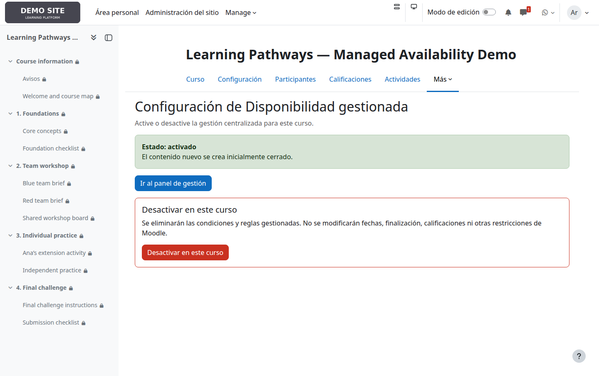
2. Entender el panel
Cada tarjeta representa una sección. Los botones de estado abren el editor completo; las acciones rápidas abren para todos o cierran para todos inmediatamente. Una acción ya satisfecha aparece gris y deshabilitada.
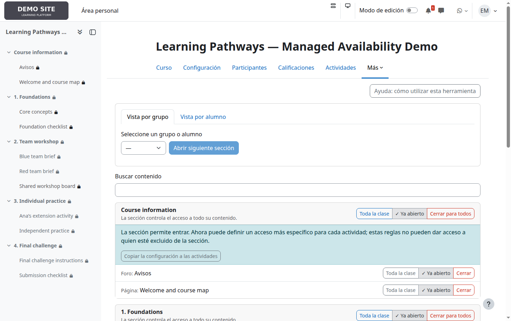
3. Sección cerrada: el contenido no es accesible
Una sección sin destinatarios está cerrada. Moodle impide llegar a todo su contenido, por lo que desaparecen los controles de actividades y se muestra una sola explicación. Las reglas interiores se conservan y reaparecen al abrir la sección.
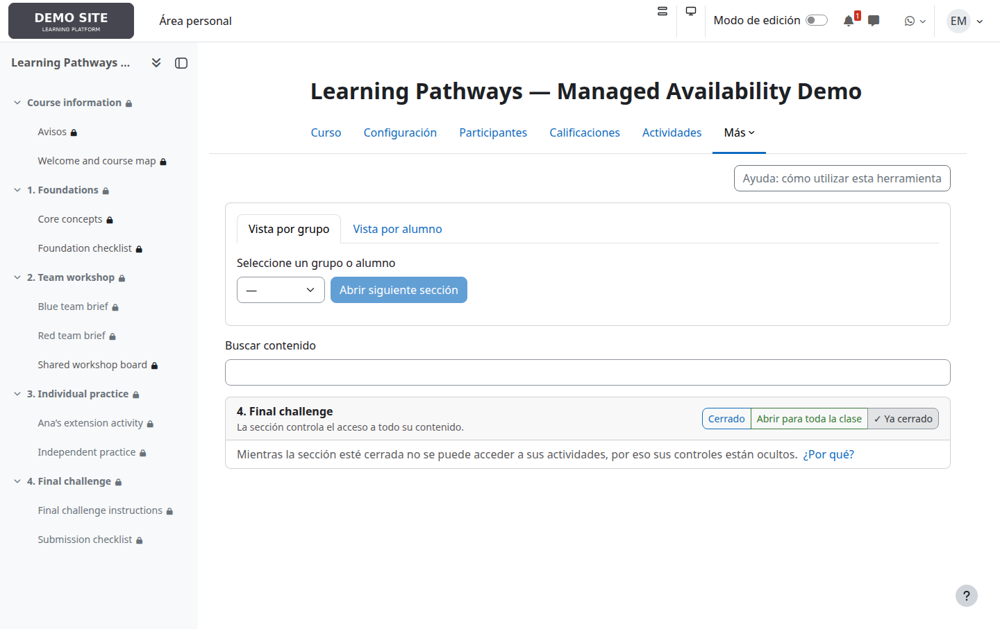
4. Sección abierta: reglas más específicas dentro
Team workshop admite a Blue team y Red team. Cada documento de equipo restringe después el acceso a su grupo, mientras el tablero compartido se abre a quienes ya entran en la sección.
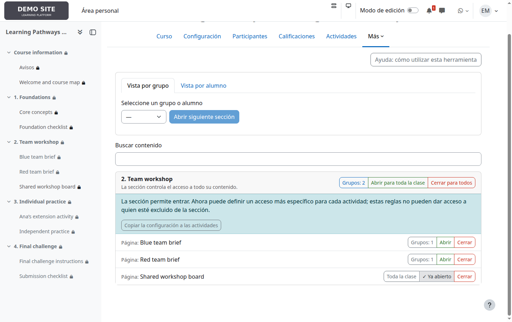
5. Elegir destinatarios
Pulse el botón de estado y elija Toda la clase, uno o varios grupos o alumnos concretos. Grupos y alumnos se combinan con O. Moodle consulta la pertenencia actual a grupos en cada acceso.
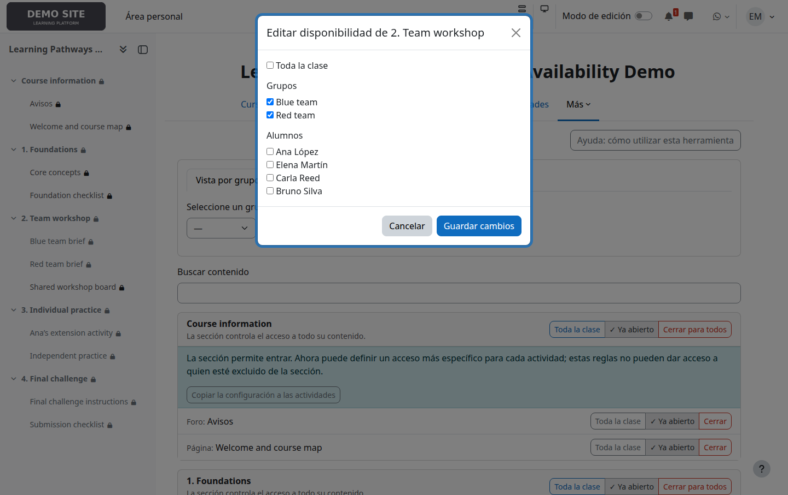
6. Copiar una sección a sus actividades
Copiar la configuración a las actividades sustituye, tras confirmación, la regla de todas las actividades. Es una copia puntual, no herencia ni sincronización, y no hace falta para bloquear el contenido de una sección cerrada.
7. Revisar el recorrido de un grupo o alumno
Vista por grupo y Vista por alumno resumen las secciones abiertas para un destinatario. Abrir siguiente sección libera manualmente la primera cerrada; no consulta notas ni finalización.
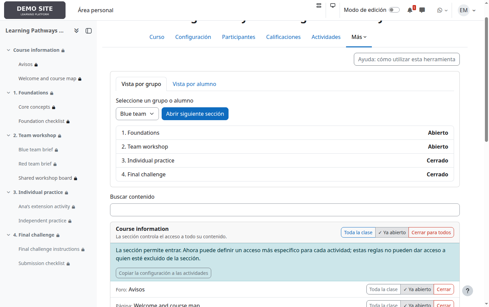
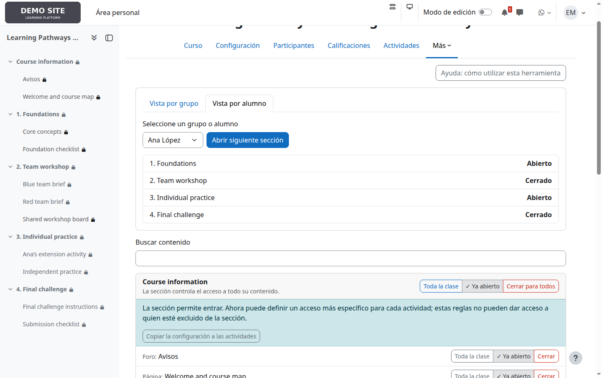
8. Comprobar la experiencia del alumno
Ana pertenece a Blue team y tiene además una liberación individual; Bruno pertenece a Red team. Las mismas reglas producen una navegación diferente.
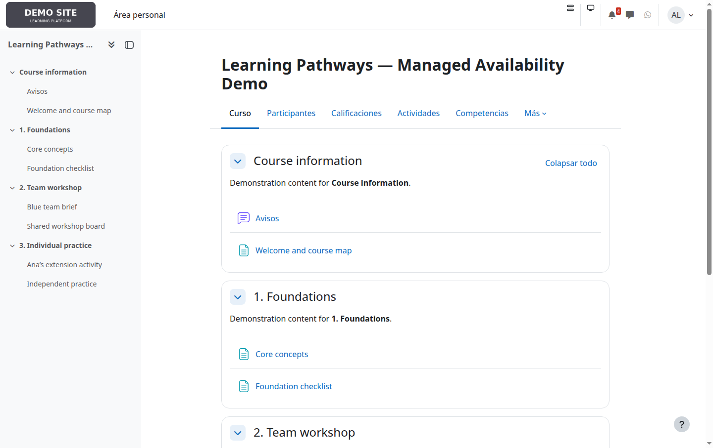
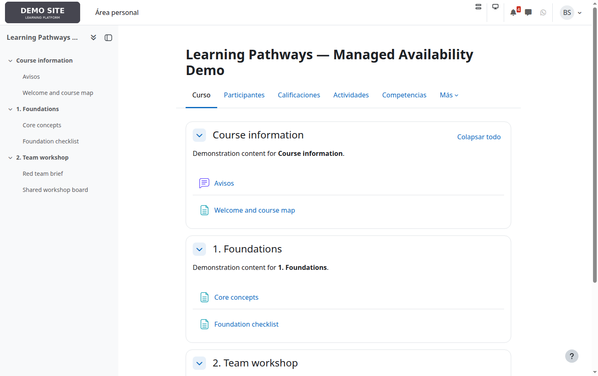
Use cuentas de alumno para verificar combinaciones importantes de sección, actividad y restricciones normales de Moodle.
9. Consultar la ayuda integrada
La ayuda del curso explica destinatarios, acciones rápidas, copia, progresión manual y precauciones sin abandonar el contexto del curso.
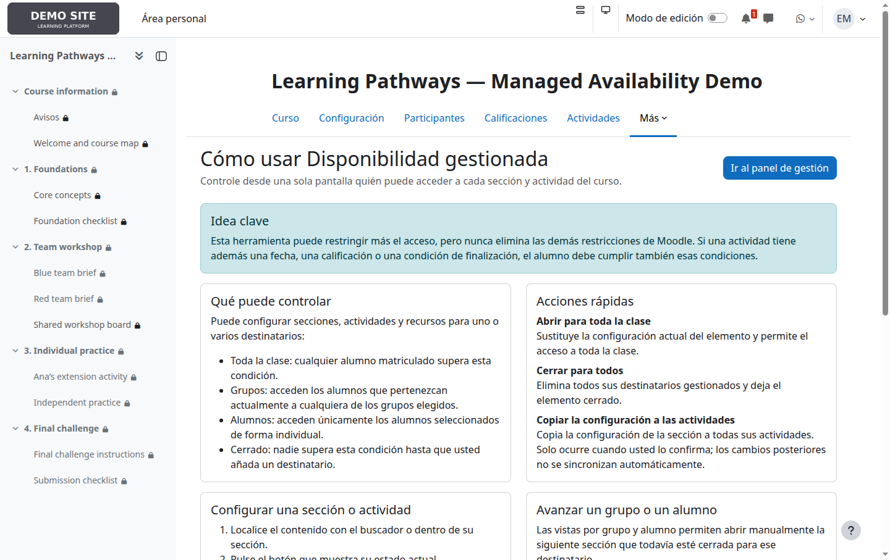
10. Consultar el historial
Los usuarios autorizados pueden revisar quién cambió cada elemento, cuándo y sus estados anterior y nuevo. Resulta útil después de acciones masivas o para investigar accesos inesperados.
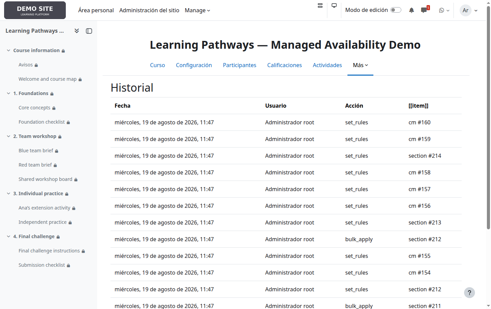
Situaciones habituales
| Objetivo | Configuración recomendada |
|---|---|
| Abrir una unidad a todos | Abra la sección para toda la clase; restrinja solo las actividades que necesiten una excepción. |
| Liberar por equipos | Seleccione grupos en la sección y configure actividades solo cuando necesiten materiales diferentes. |
| Acceso excepcional | Añada al alumno en la sección y en cualquier actividad restringida que también necesite. |
| Ocultar una unidad | Cierre la sección; no cierre cada actividad por separado. |
| Pausar todo el sitio | Use la suspensión global, que conserva las reglas. No desactive cada curso. |